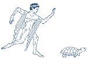
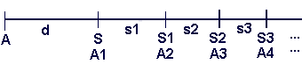

Achill und die Schildkröte (Paradoxie des Zenon: um 500 v.Chr.)
Problem: Wettlauf zwischen Achill A und der Schildkröte S:
S habe d Vorsprung. Ist A an der Stelle A1(Startposition von S) angelangt, so
ist S doch bereits an der Stelle S1. Ist A an der Stelle A2 = S1 angelangt, so
ist S doch bereits an der Stelle S2 usw. Wenn A also jeweils an der Stelle ist,
wo S vorher war, so ist S immer wieder bereits eine Strecke weiter. Holt also
Achill die Schildkröte nie ein?


Das berühmte Paradoxon lässt sich mit Hilfe der Formeln für unendliche geometrische Reihen erklären:
Die Geschwindigkeit von A sei vA , diejenige
der Schildkröte sei vS mit vA > vS .
A benötige für die Strecke d die Zeit t1 . Also t1
= d / vA .
Strecke s1 = vS · t1 = vS / vA · d
A benötige für die Strecke s1 = A1A2 die Zeit t2 . Also t2
= s1 / vA .
Strecke s2 = vS · t2 = vS
/ vA · s1
A benötige für die Strecke s2 = A2A3 die Zeit t3 . Also t3
= s2 / vA .
Strecke s3 = vS ·
t3 = vS / vA · s2 und so weiter.
Also ist (sn ) eine geometrische Folge mit q = vS / vA < 1.
Daher konvergiert die unendliche geom. Reihe s = s1 + s2 + s3 + ...
s = s1 / (1 - q) = (vS / vA · d) / (1 - vS / vA ) = vS · d / (vA - vS ). (*)
Dies stimmt mit der elementaren Berechnung der Gesamtzeit T überein, bis Achill die Schildkröte einholt:
vA · T = vS · T + d , also T = d / (vA - vS )
Nach (*): s = vS · T , also T = d / (vA - vS )